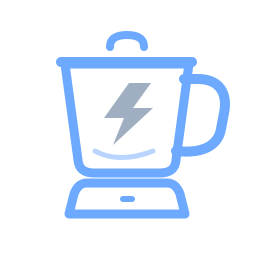
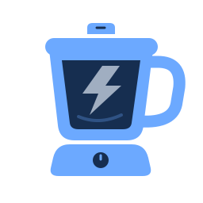
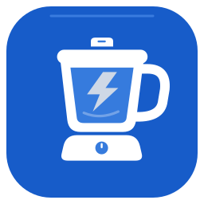

DIRECTION A线性轮廓轻巧、克制，适合菜单栏与工具界面。额度榨汁机 额度榨汁机 静态 · 灰色闪电额度榨汁机 工作态配色 · 静态示意深色背景 / 64 · 32 · 24
DIRECTION B实心几何轮廓鲜明，适合长期品牌与多尺寸传播。额度榨汁机 额度榨汁机 静态 · 灰色闪电额度榨汁机 工作态配色 · 静态示意深色背景 / 64 · 32 · 24
DIRECTION C圆角 App 图标完整蓝色底座，适合桌面与应用商店。额度榨汁机 额度榨汁机 静态 · 灰色闪电额度榨汁机 工作态配色 · 静态示意深色背景 / 64 · 32 · 24